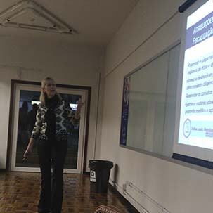

Algumas noticias da Unidavi
Formatura Institucional

Na tarde da quinta-feira (23), o Centro Universitário para o Desenvolvimento do Alto Vale do Itajaí - Unidavi realizou a cerimônia de Colação de Grau Institucional dos Cursos de Administração e Educação Física.
O Reitor Prof. M.e Célio Simão Martignago conduziu o momento acompanhado do vice-reitor e pró-reitor de Administração, professores Alcir Texeira, do professor Doutor Mehran Ramezanali, coordenador do curso de Administração e do professor M.e Júlio Cesar Nasário, coordenador do curso de Educação Física.
Seis academicos concluiram seus cursos e receberam o diploma de graduação. Parabéns aos formados!
Congresso do Departamento de Imagem Cardiovascular

Unir teoria à prática faz parte do aprendizado desenvolvido no curso de Medicina da Unidavi. As alunas da terceira fase do curso, Isabela de Andrade Lindner e Patrícia Sens de Oliveira, orientadas pela Profª Drª Josie Budag Matsuda, e em parceria com a cardiologista Drª Caroline de Oliveira Fischer Bacca, desenvolveram o trabalho "Valor preditivo positivo do protocolo precoce da ecocardiográfica de estresse com dobutamina na detecção de doença arterial coronariana".
O trabalho foi apresentado no 8º Congresso do Departamento de Imagem Cardiovascular, realizado em Florianópolis, representado pela Drª Caroline.
Este trabalho é prova de que os acadêmicos da Unidavi juntamente com profissionais da área, conseguem unir a teoria da sala aula com a vivência do profissional no mercado.
Palestra sobre Ética e Transparência
No dia 03 de agosto a Vice-presidente de Administração e Finanças do Conselho Regional de Contabilidade de Santa Catarina (CRC/SC), Rúbia Albers Magalhães, ministrou palestra para os alunos da segunda e sexta fases do Curso de Ciências Contábeis da Unidavi.
A palestra teve como tema: Ética e Transparência - Contador a serviço da sociedade
Rúbia ressaltou aspectos relacionados à ética no desempenho profissional do Contador e o papel do CRC/SC no que se refere à fiscalização do exercício profissional. Além disso, destacou as ações que o CRC/SC está desenvolvendo junto à sociedade sobre a transparência e utilização do dinheiro.
Noticias recentes da Unidavi.